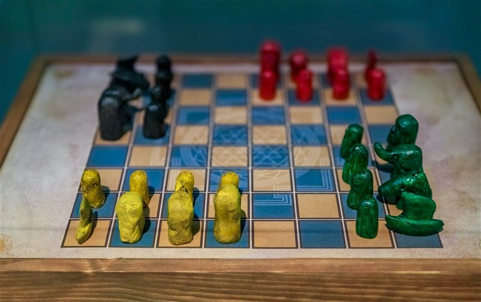
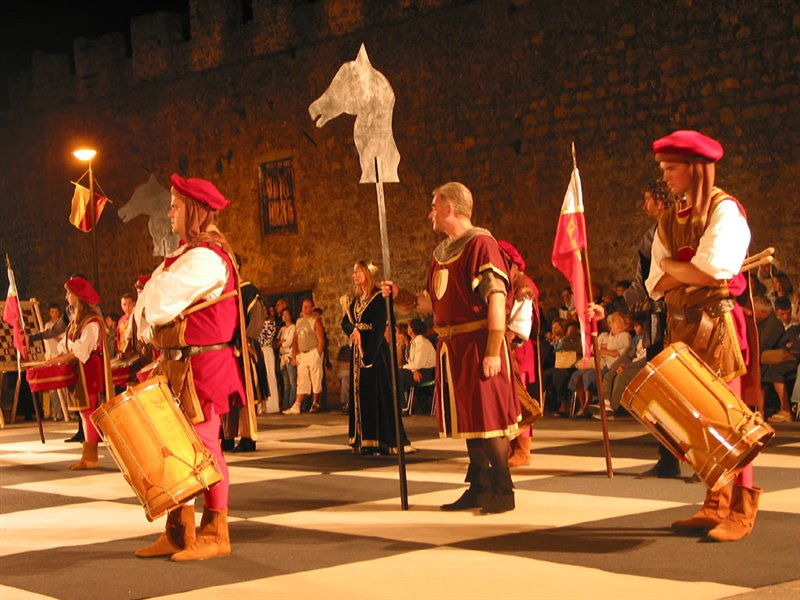
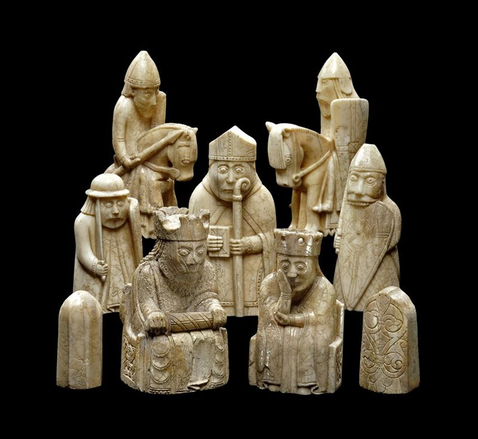

La Historia Del Ajedrez
A lo largo de sus casi 1.500 años de historia, el ajedrez ha dado lugar a una gran variedad de juegos y modos de jugar: desde un simple pasatiempo hasta un deporte intelectual con grandes sumas de dinero en juego.
Un día, un embajador del rey de Hind llegó a la corte persa de Cosroes, y después de un intercambio de cortesías, sacó ricos regalos de su soberano y entre ellos había un tablero elaborado con piezas de ébano y marfil curiosamente talladas. Luego lanzó un desafío: 'Oh gran rey, llama a tus sabios y haz que resuelvan los misterios de este juego. Si tienen éxito, mi amo el rey de Hind te pagará tributo como señor supremo, pero si fallan será una prueba de que los persas tienen un intelecto inferior y exigiremos tributo a Irán.
Este fragmento del poema épico persa Shahnameh (“Libro de los reyes”) es la primera mención conocida del origen del ajedrez. Según su autor, el poeta Fedrousí, el juego se había originado en el siglo VI a raíz de una disputa por el trono de Hind (India) entre los hermanos Gav y Talhand: el segundo había muerto en batalla y su madre, disgustada, recriminó a Gav que hubiera matado a su hermano. Este negó haberlo hecho y, para probar su inocencia, recreó la batalla usando piezas de marfil que representaban las cuatro unidades de combate del ejército: la infantería, la caballería, los elefantes y los carros.
UNA GRAN FAMILIA
Fuera cierta o no la leyenda que narra Fedrousí, sí se sabe que el ajedrez tiene su origen en el juego que describe: el chaturanga, cuyo nombre significa “cuatro divisiones” en referencia a las cuatro piezas que simbolizan las unidades del ejército indio. Estas son las más antiguas del juego y corresponden a los actuales peones (para la infantería), caballos (caballería), alfiles (elefantes) y torres (carros) de la versión moderna del juego.

Su popularidad explica la gran diversidad de piezas y reglas: existen más de doscientos tipos de piezas de ajedrez, que el historiador David Parlett -especializado en historia de los juegos- recopiló en su libro The Oxford History of Board Games. En la versión internacional del juego, solo seis son consideradas “ortodoxas” o estándar: el peón, la torre, el alfil, el caballo, la reina o dama y el rey. Los juegos emparentados tienen sus propias piezas que reflejan la tradición militar de cada lugar: así, por ejemplo, el xiangqi tiene cañones y el shogi, lanceros.

PASATIEMPO INTERNACIONAL
La razón de esta gran diversidad se puede atribuir en parte a las grandes rutas comerciales euroasiáticas (principalmente la Ruta de la Seda) y en parte a los imperios musulmanes de la Edad Media. Los árabes adoptaron muchas costumbres persas, entre ellas este juego que se había vuelto popular en la corte del Imperio Sasánida, y lo extendieron por Europa y por Asia. Del persa procede también la expresión shah mat, “el rey está acabado”: lo que conocemos como checkmate o jaque mate.
El ajedrez era ya un pasatiempo internacional a mediados de la Edad Media. La Ruta de la Seda y los imperios musulmanes llevaron el juego desde Persia hacia toda Europa y Asia.
Los registros históricos y hallazgos arqueológicos demuestran que el ajedrez era ya un pasatiempo internacional a mediados de la Edad Media. Era el juego favorito de monarcas tan conocidos como Alfonso el Sabio, Iván el Terrible o el califa Harún al-Rashid, quien regaló un juego de marfil al emperador Carlomagno. También de esa época procede una magnífica colección de 78 piezas vikingas fabricadas con colmillos de morsa.
